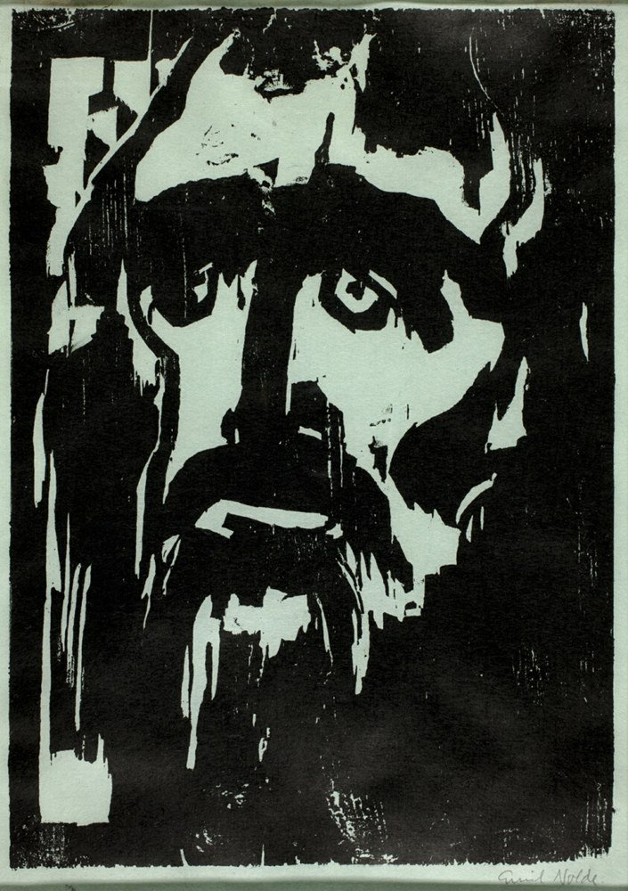

Prophet
Emil Nolde · 1912 · Woodcut in black on blue Japanese paper · image 32 × 22.8 cm · Art Institute of Chicago
In copyright. Look and learn: shown for study, not for download.
Nolde made this woodcut in 1912; this impression is printed in black on blue Japanese paper and signed in pencil. He had grown up a farmer's son in a small religious community near the German-Danish border, and after 1911 his religious subjects became darker in tone. The catalogue of his prints by Schiefler lists 197 woodcuts. Nolde, born Hans Emil Hansen, was 44 or 45 that year.